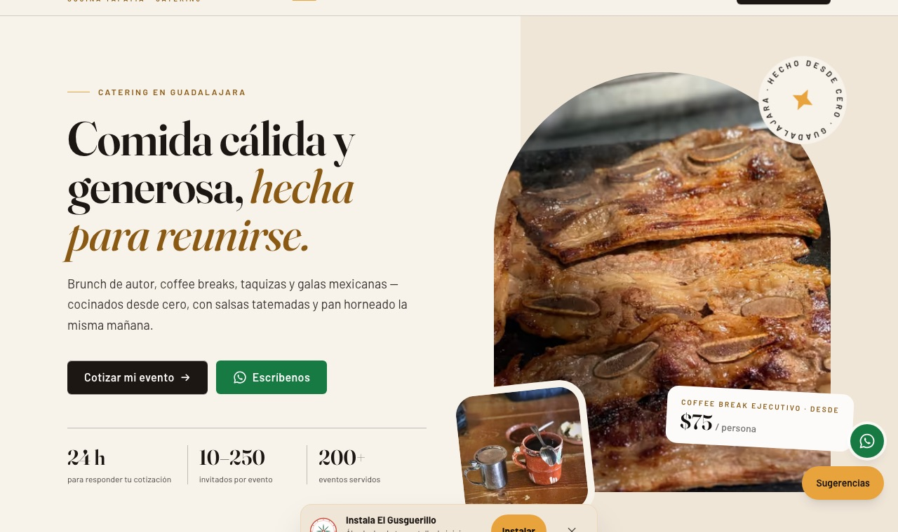
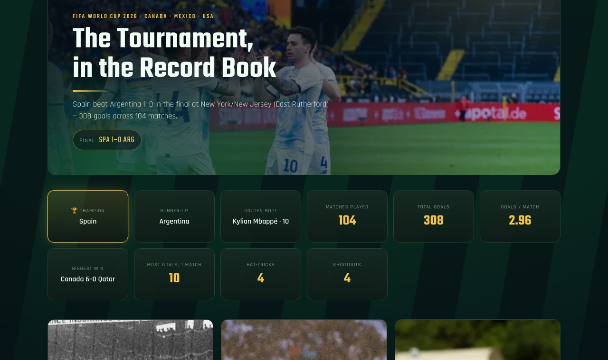

Senior DevOps & SRE engineer from Guadalajara. Fourteen years keeping production calm, seven of them on AWS, with Terraform, Kubernetes and pipelines that people actually trust.
Teams I've worked with
One live system with a real business behind it, and two side projects with the code open.

Their website, event bookings, staff console and WhatsApp ordering bot all run on AWS infrastructure I designed and operate. The rule from day one: it can never cost a cent.

My son is crazy about soccer, so I built him a page to follow the tournament. Behind it: K3s, Prometheus and Grafana squeezed onto a single tiny server inside the AWS Free Tier.
Version one worked until a retry duplicated work and a failure vanished silently. Version two makes every failure visible and caps the cost per image.
Full-time on your team or on a contract, these are the problems I like most.
Terraform and Ansible so every environment comes up the same way, every time.
GitHub Actions, GitLab CI or Jenkins, with OIDC instead of stored keys.
Datadog, Prometheus and Grafana alerts that page for real problems only.
Removing idle resources, least-privilege IAM and audit-ready AWS standards.
Oracle, PostgreSQL and Aurora tuning, backups and disaster recovery.
I use AI agents every day, with clear rules and my OK before anything touches production.
I studied Computer Systems Engineering at UACJ and started in 2012 running Oracle and DB2 databases in a private cloud across three data centers. Patch windows, disaster recovery drills and 10 TB databases teach you respect for production.
In 2019 I moved those habits to AWS, and since then I've led cloud engineering at FICO, tuned Aurora at BlackLine and automated Linux at scale at Petco.
Outside work I'm a dad who builds dashboards for soccer fans, and I'm studying for the AWS Solutions Architect – Associate. I work in English every day (C1) and Spanish is home.
Ansible, Terraform and Kubernetes across GCP and AWS.
Network discovery, NetApp upgrades and CI/CD, all automated.
Jenkins to pipelines, AWS standards, tickets 48 h → 24 h.
Aurora +20% query speed, −15% CPU; RDS in 10 minutes.
Weekly releases, Terragrunt modules, on-call with PagerDuty.
First AWS migrations, then Exadata and RAC on Oracle Cloud.
Private clouds, RAC, 80+ implementations, DR drills.
🎓 Ingeniero en Sistemas Computacionales, Universidad Autónoma de Ciudad Juárez
Send me a WhatsApp or an email. I'm in Guadalajara (Central Mexico time) and I reply the same day.